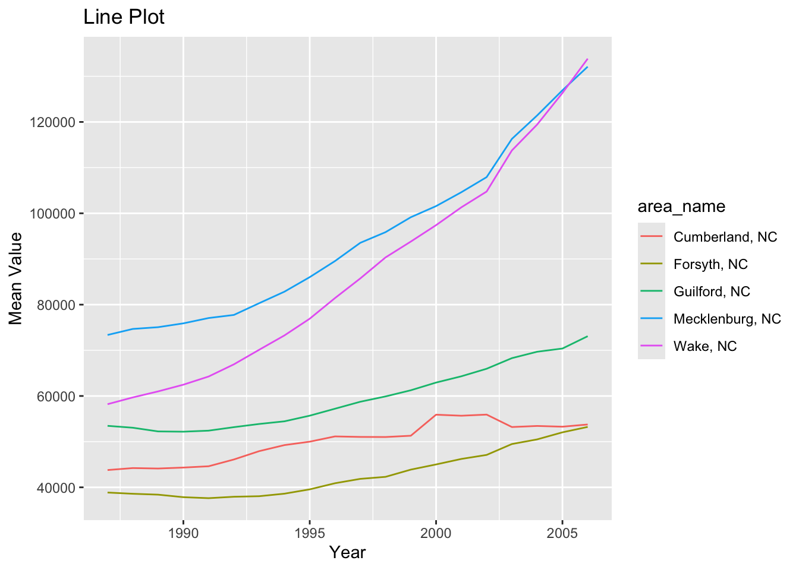

── Conflicts ────────────────────────────────────────── tidyverse_conflicts() ──
✖ dplyr::filter() masks stats::filter()
✖ dplyr::lag() masks stats::lag()
ℹ Use the conflicted package (<http://conflicted.r-lib.org/>) to force all conflicts to become errors
library(readr)
For our first data file, we will only be looking at some of the columns. Initially, we want to read the data in and call it, to make sure we’ve done this successfully.
Rows: 3198 Columns: 42
── Column specification ────────────────────────────────────────────────────────
Delimiter: ","
chr (22): Area_name, STCOU, EDU010187N1, EDU010187N2, EDU010188N1, EDU010188...
dbl (20): EDU010187F, EDU010187D, EDU010188F, EDU010188D, EDU010189F, EDU010...
ℹ Use `spec()` to retrieve the full column specification for this data.
ℹ Specify the column types or set `show_col_types = FALSE` to quiet this message.
The data looks good! So now we will select only the columns that we’d like to look at. Using the select() function, we can name our data frame, the columns that we want, and we can even use starts_with and ends_with to help us choose exactly what we want with a little more specificity and ease. We are creating a new object in the process so that we can do further manipulations on just these columns. We’re calling the new object EDU01a_select.
# A tibble: 3,198 × 12
area_name STCOU EDU010187D EDU010188D EDU010189D EDU010190D EDU010191D
<chr> <chr> <dbl> <dbl> <dbl> <dbl> <dbl>
1 UNITED STATES 00000 40024299 39967624 40317775 40737600 41385442
2 ALABAMA 01000 733735 728234 730048 728252 725541
3 Autauga, AL 01001 6829 6900 6920 6847 7008
4 Baldwin, AL 01003 16417 16465 16799 17054 17479
5 Barbour, AL 01005 5071 5098 5068 5156 5173
6 Bibb, AL 01007 3557 3508 3571 3621 3652
7 Blount, AL 01009 7319 7223 7205 7209 7155
8 Bullock, AL 01011 2014 1980 1985 1983 1985
9 Butler, AL 01013 4640 4582 4610 4591 4544
10 Calhoun, AL 01015 20939 20923 20907 20849 20768
# ℹ 3,188 more rows
# ℹ 5 more variables: EDU010192D <dbl>, EDU010193D <dbl>, EDU010194D <dbl>,
# EDU010195D <dbl>, EDU010196D <dbl>
#2
We know that in this data, the column that ends with a D indicates an enrollment value for that year (with the year being the two digits before the ‘D’). Going down, we see all of the enrollment values from that year, in all of the different cities. In order to make this data easier for us to read and understand, we can convert it to long format and rename the columns. What this will do, is turn the columns with this awkward long name ending with D, to simply read ‘Enrollment’. Then all of the years will be listed going down and the corresponding values will appear alongside them. This also means that there will be more than one row/observation for each city. Instead of looking all the way across the row for each city and scanning for the correct year column, we will now have individual rows/observations for city, a year, and the corresponding enrollment value. This will make things easier to process.
In order to do this conversion, we are going to simply use the pivot_longer() function, and its built-in arguments to achieve our goal. Names_to helps us give a new name to the new column containing the NAMES OF THE COLUMNS we have specified. This makes sense when you think about it because these used to be names of the columns and now they need a new name, as they have been rotated and will be located where the data is. Values_to helps us set a new name for the data values that will remain values but will just be slightly shifted to correspond to the brand new Enrollment column we’ve made.
# using the help documentation is such a convenient way to remember what the arguments are asking forhelp(pivot_longer)
Let’s give it a whirl! And we are also creating a new object at the same time called EDU01a_long.
#2 - Convert to long dataEDU01a_long <-pivot_longer(EDU01a_select, cols =3:12,names_to ="Enrollment",values_to ="values")str(EDU01a_long)
Scrolling through, the data looks how we want it to for now.
#3
The next step is to make further sense of this long Enrollment string. Two digits of the year are in there so we want to pull that out and make it look better by adding the other digits of the year.
The enrollment variable contains strings that are 10 digits long, so we are pulling out the year data with the substr() function, and the first 7 digits will also be pulled out as a new ‘Measurement’ variable.
#3 create new variable for the 2 year digits called 'incomplete year' and then convert it to numeric so that we will be able to add 1900 to it, so it will be in date format. EDU01a_new <- EDU01a_long |>mutate(IncompleteYear =as.numeric(substr(Enrollment, 7, 9)),Measurement =substr(Enrollment, 1, 7), Year = IncompleteYear +1800) |>select(-IncompleteYear)EDU01a_new
# A tibble: 31,980 × 6
area_name STCOU Enrollment values Measurement Year
<chr> <chr> <chr> <dbl> <chr> <dbl>
1 UNITED STATES 00000 EDU010187D 40024299 EDU0101 1987
2 UNITED STATES 00000 EDU010188D 39967624 EDU0101 1988
3 UNITED STATES 00000 EDU010189D 40317775 EDU0101 1989
4 UNITED STATES 00000 EDU010190D 40737600 EDU0101 1990
5 UNITED STATES 00000 EDU010191D 41385442 EDU0101 1991
6 UNITED STATES 00000 EDU010192D 42088151 EDU0101 1992
7 UNITED STATES 00000 EDU010193D 42724710 EDU0101 1993
8 UNITED STATES 00000 EDU010194D 43369917 EDU0101 1994
9 UNITED STATES 00000 EDU010195D 43993459 EDU0101 1995
10 UNITED STATES 00000 EDU010196D 44715737 EDU0101 1996
# ℹ 31,970 more rows
#4
The data contains both county and non-county data, so we are going to separate them. We will do that by using “, \w\w” to look for the character string that is in the format of the state acronym. The acronym TELLS us that it is county data (because the states don’t have that). The grep() function finds patterns that match the given pattern.
We are creating an object called ‘countystuff’ and this will be a list of integers that match the row numbers of the county data.
#4# Create two data sets, one for non-county and one for county levelcountystuff <-grep(pattern =", \\w\\w", EDU01a_new$area_name)
Let’s test it to see if pulling out the acronym worked!
# looking at the output and structure of countystuffstr(countystuff)
int [1:31450] 21 22 23 24 25 26 27 28 29 30 ...
Now, we can use the list we just created to indicate which rows we want in a brand new tibble called EDU01a_county. In this case, we want the ‘countystuff’ rows and all of the columns associated with them.
# A tibble: 31,450 × 6
area_name STCOU Enrollment values Measurement Year
<chr> <chr> <chr> <dbl> <chr> <dbl>
1 Autauga, AL 01001 EDU010187D 6829 EDU0101 1987
2 Autauga, AL 01001 EDU010188D 6900 EDU0101 1988
3 Autauga, AL 01001 EDU010189D 6920 EDU0101 1989
4 Autauga, AL 01001 EDU010190D 6847 EDU0101 1990
5 Autauga, AL 01001 EDU010191D 7008 EDU0101 1991
6 Autauga, AL 01001 EDU010192D 7137 EDU0101 1992
7 Autauga, AL 01001 EDU010193D 7152 EDU0101 1993
8 Autauga, AL 01001 EDU010194D 7381 EDU0101 1994
9 Autauga, AL 01001 EDU010195D 7568 EDU0101 1995
10 Autauga, AL 01001 EDU010196D 7834 EDU0101 1996
# ℹ 31,440 more rows
This looks great! By using the negative sign, we can now create a tibble for state data with the county rows REMOVED. This will just leave the non-county (or state) rows and all the columns.
# A tibble: 530 × 6
area_name STCOU Enrollment values Measurement Year
<chr> <chr> <chr> <dbl> <chr> <dbl>
1 UNITED STATES 00000 EDU010187D 40024299 EDU0101 1987
2 UNITED STATES 00000 EDU010188D 39967624 EDU0101 1988
3 UNITED STATES 00000 EDU010189D 40317775 EDU0101 1989
4 UNITED STATES 00000 EDU010190D 40737600 EDU0101 1990
5 UNITED STATES 00000 EDU010191D 41385442 EDU0101 1991
6 UNITED STATES 00000 EDU010192D 42088151 EDU0101 1992
7 UNITED STATES 00000 EDU010193D 42724710 EDU0101 1993
8 UNITED STATES 00000 EDU010194D 43369917 EDU0101 1994
9 UNITED STATES 00000 EDU010195D 43993459 EDU0101 1995
10 UNITED STATES 00000 EDU010196D 44715737 EDU0101 1996
# ℹ 520 more rows
Here are the class attributes of our newly made tibble before we are going to change them.
class(EDU01a_county)
[1] "tbl_df" "tbl" "data.frame"
Here, we are adding a class attribute called “county” to the already existing attributes. These are printed in the form of a vector.
Now, we are creating a new tibble with an additional column for the class type. In the new column, we are calling the first index so ‘county’ will be printed in the new class column.
# A tibble: 31,450 × 7
area_name STCOU Enrollment values Measurement Year class_type
<chr> <chr> <chr> <dbl> <chr> <dbl> <chr>
1 Autauga, AL 01001 EDU010187D 6829 EDU0101 1987 county
2 Autauga, AL 01001 EDU010188D 6900 EDU0101 1988 county
3 Autauga, AL 01001 EDU010189D 6920 EDU0101 1989 county
4 Autauga, AL 01001 EDU010190D 6847 EDU0101 1990 county
5 Autauga, AL 01001 EDU010191D 7008 EDU0101 1991 county
6 Autauga, AL 01001 EDU010192D 7137 EDU0101 1992 county
7 Autauga, AL 01001 EDU010193D 7152 EDU0101 1993 county
8 Autauga, AL 01001 EDU010194D 7381 EDU0101 1994 county
9 Autauga, AL 01001 EDU010195D 7568 EDU0101 1995 county
10 Autauga, AL 01001 EDU010196D 7834 EDU0101 1996 county
# ℹ 31,440 more rows
We are going to do the same thing for state/non-county data now.
Let’s take a look at the new tibbles. They look great!
print(EDU01a_county_class)
# A tibble: 31,450 × 7
area_name STCOU Enrollment values Measurement Year class_type
<chr> <chr> <chr> <dbl> <chr> <dbl> <chr>
1 Autauga, AL 01001 EDU010187D 6829 EDU0101 1987 county
2 Autauga, AL 01001 EDU010188D 6900 EDU0101 1988 county
3 Autauga, AL 01001 EDU010189D 6920 EDU0101 1989 county
4 Autauga, AL 01001 EDU010190D 6847 EDU0101 1990 county
5 Autauga, AL 01001 EDU010191D 7008 EDU0101 1991 county
6 Autauga, AL 01001 EDU010192D 7137 EDU0101 1992 county
7 Autauga, AL 01001 EDU010193D 7152 EDU0101 1993 county
8 Autauga, AL 01001 EDU010194D 7381 EDU0101 1994 county
9 Autauga, AL 01001 EDU010195D 7568 EDU0101 1995 county
10 Autauga, AL 01001 EDU010196D 7834 EDU0101 1996 county
# ℹ 31,440 more rows
print(EDU01a_state_class)
# A tibble: 530 × 7
area_name STCOU Enrollment values Measurement Year class_type
<chr> <chr> <chr> <dbl> <chr> <dbl> <chr>
1 UNITED STATES 00000 EDU010187D 40024299 EDU0101 1987 state
2 UNITED STATES 00000 EDU010188D 39967624 EDU0101 1988 state
3 UNITED STATES 00000 EDU010189D 40317775 EDU0101 1989 state
4 UNITED STATES 00000 EDU010190D 40737600 EDU0101 1990 state
5 UNITED STATES 00000 EDU010191D 41385442 EDU0101 1991 state
6 UNITED STATES 00000 EDU010192D 42088151 EDU0101 1992 state
7 UNITED STATES 00000 EDU010193D 42724710 EDU0101 1993 state
8 UNITED STATES 00000 EDU010194D 43369917 EDU0101 1994 state
9 UNITED STATES 00000 EDU010195D 43993459 EDU0101 1995 state
10 UNITED STATES 00000 EDU010196D 44715737 EDU0101 1996 state
# ℹ 520 more rows
#5
In our County tibble, we want to not only be able to see that the class type is a county, but also see what state the county is in using the state acronym. We are going to use the same substr() function as before to extract the acronym.
The negative one indicates that the ‘start’ index is the second to last digit, and then we are using the total number of positions in ‘area_name’ to indicate the ‘stop’ index. So this would be the last digit. That’s how we are getting the last two digits for the acronym.
#5 Creating a new column for the state abbreviation in the county tibble.EDU01a_county_class_abb <- EDU01a_county_class |>mutate(abbrev_state =substr(area_name, nchar(area_name)-1, nchar(area_name)))print(EDU01a_county_class_abb)
# A tibble: 31,450 × 8
area_name STCOU Enrollment values Measurement Year class_type abbrev_state
<chr> <chr> <chr> <dbl> <chr> <dbl> <chr> <chr>
1 Autauga, AL 01001 EDU010187D 6829 EDU0101 1987 county AL
2 Autauga, AL 01001 EDU010188D 6900 EDU0101 1988 county AL
3 Autauga, AL 01001 EDU010189D 6920 EDU0101 1989 county AL
4 Autauga, AL 01001 EDU010190D 6847 EDU0101 1990 county AL
5 Autauga, AL 01001 EDU010191D 7008 EDU0101 1991 county AL
6 Autauga, AL 01001 EDU010192D 7137 EDU0101 1992 county AL
7 Autauga, AL 01001 EDU010193D 7152 EDU0101 1993 county AL
8 Autauga, AL 01001 EDU010194D 7381 EDU0101 1994 county AL
9 Autauga, AL 01001 EDU010195D 7568 EDU0101 1995 county AL
10 Autauga, AL 01001 EDU010196D 7834 EDU0101 1996 county AL
# ℹ 31,440 more rows
#6
Similarly, we want to display the division for the states. In order to do this, we are first creating a vector of all of the divisions as attributes for the state name data points.
#6 # creating a vector of the divisionsstate_division <-c("CONNECTICUT"="New England", "MAINE"="New England","MASSACHUSETTS"="New England","NEW HAMPSHIRE"="New England","RHODE ISLAND"="New England","VERMONT"="New England","NEW JERSEY"="Middle Atlantic","NEW YORK"="Middle Atlantic","PENNSYLVANIA"="Middle Atlantic","ILLINOIS"="East North Central","INDIANA"="East North Central","MICHIGAN"="East North Central","OHIO"="East North Central","WISCONSIN"="East North Central","IOWA"="West North Central","KANSAS"="West North Central","MINNESOTA"="West North Central","MISSOURI"="West North Central","NEBRASKA"="West North Central","NORTH DAKOTA"="West North Central","SOUTH DAKOTA"="West North Central","DELAWARE"="South Atlantic","FLORIDA"="South Atlantic","GEORGIA"="South Atlantic","MARYLAND"="South Atlantic","NORTH CAROLINA"="South Atlantic","SOUTH CAROLINA"="South Atlantic","VIRGINIA"="South Atlantic","District of Columbia"="South Atlantic","DISTRICT OF COLUMBIA"="South Atlantic","WEST VIRGINIA"="South Atlantic","ALABAMA"="East South Central","KENTUCKY"="East South Central","MISSISSIPPI"="East South Central","TENNESSEE"="East South Central","ARKANSAS"="West South Central","LOUISIANA"="West South Central","OKLAHOMA"="West South Central","TEXAS"="West South Central","ARIZONA"="Mountain","COLORADO"="Mountain","IDAHO"="Mountain","MONTANA"="Mountain","NEVADA"="Mountain","NEW MEXICO"="Mountain","UTAH"="Mountain","WYOMING"="Mountain","ALASKA"="Pacific","CALIFORNIA"="Pacific","HAWAII"="Pacific","OREGON"="Pacific","WASHINGTON"="Pacific")
We have created a vector of named character strings called state_division.
str(state_division)
Named chr [1:52] "New England" "New England" "New England" "New England" ...
- attr(*, "names")= chr [1:52] "CONNECTICUT" "MAINE" "MASSACHUSETTS" "NEW HAMPSHIRE" ...
Here we are using a vectorized function to create our new tibble with the state division. The mutate() function allows us to create a new column, and the ifelse vectorized function is basically saying, in the vector state_division, if the names of the vector elements matches the area_name variable, it will return what is found in that next position in the function… the area_name value that is in the state_division vector.
Finally, the very last position in the function says what will be returned if there IS NOT a match- “Error”.
# A tibble: 530 × 8
area_name STCOU Enrollment values Measurement Year class_type division
<chr> <chr> <chr> <dbl> <chr> <dbl> <chr> <chr>
1 UNITED STATES 00000 EDU010187D 40024299 EDU0101 1987 state Error
2 UNITED STATES 00000 EDU010188D 39967624 EDU0101 1988 state Error
3 UNITED STATES 00000 EDU010189D 40317775 EDU0101 1989 state Error
4 UNITED STATES 00000 EDU010190D 40737600 EDU0101 1990 state Error
5 UNITED STATES 00000 EDU010191D 41385442 EDU0101 1991 state Error
6 UNITED STATES 00000 EDU010192D 42088151 EDU0101 1992 state Error
7 UNITED STATES 00000 EDU010193D 42724710 EDU0101 1993 state Error
8 UNITED STATES 00000 EDU010194D 43369917 EDU0101 1994 state Error
9 UNITED STATES 00000 EDU010195D 43993459 EDU0101 1995 state Error
10 UNITED STATES 00000 EDU010196D 44715737 EDU0101 1996 state Error
# ℹ 520 more rows
Hooray! It is showing the Division in our new column!
This wraps up our pre-processing steps. Now, we will write functions that combine and repeat these steps so we can quickly and efficiently make these changes with a new data set.
# A tibble: 31,980 × 4
area_name STCOU Enrollment measurement
<chr> <chr> <chr> <dbl>
1 UNITED STATES 00000 EDU010187D 40024299
2 UNITED STATES 00000 EDU010188D 39967624
3 UNITED STATES 00000 EDU010189D 40317775
4 UNITED STATES 00000 EDU010190D 40737600
5 UNITED STATES 00000 EDU010191D 41385442
6 UNITED STATES 00000 EDU010192D 42088151
7 UNITED STATES 00000 EDU010193D 42724710
8 UNITED STATES 00000 EDU010194D 43369917
9 UNITED STATES 00000 EDU010195D 43993459
10 UNITED STATES 00000 EDU010196D 44715737
# ℹ 31,970 more rows
Function for step 3
step_3 <-function(data) { data |>mutate(IncompleteYear =as.numeric(substr(Enrollment, 7, 9)),#Measurement = substr(measurement, 1, 7), Year = IncompleteYear +1800) |>select(-IncompleteYear)}step3result <-step_3(step1result)print(step3result)
# A tibble: 31,980 × 5
area_name STCOU Enrollment measurement Year
<chr> <chr> <chr> <dbl> <dbl>
1 UNITED STATES 00000 EDU010187D 40024299 1987
2 UNITED STATES 00000 EDU010188D 39967624 1988
3 UNITED STATES 00000 EDU010189D 40317775 1989
4 UNITED STATES 00000 EDU010190D 40737600 1990
5 UNITED STATES 00000 EDU010191D 41385442 1991
6 UNITED STATES 00000 EDU010192D 42088151 1992
7 UNITED STATES 00000 EDU010193D 42724710 1993
8 UNITED STATES 00000 EDU010194D 43369917 1994
9 UNITED STATES 00000 EDU010195D 43993459 1995
10 UNITED STATES 00000 EDU010196D 44715737 1996
# ℹ 31,970 more rows
# A tibble: 31,980 × 6
area_name STCOU Enrollment measurement Year state
<chr> <chr> <chr> <dbl> <dbl> <chr>
1 UNITED STATES 00000 EDU010187D 40024299 1987 <NA>
2 UNITED STATES 00000 EDU010188D 39967624 1988 <NA>
3 UNITED STATES 00000 EDU010189D 40317775 1989 <NA>
4 UNITED STATES 00000 EDU010190D 40737600 1990 <NA>
5 UNITED STATES 00000 EDU010191D 41385442 1991 <NA>
6 UNITED STATES 00000 EDU010192D 42088151 1992 <NA>
7 UNITED STATES 00000 EDU010193D 42724710 1993 <NA>
8 UNITED STATES 00000 EDU010194D 43369917 1994 <NA>
9 UNITED STATES 00000 EDU010195D 43993459 1995 <NA>
10 UNITED STATES 00000 EDU010196D 44715737 1996 <NA>
# ℹ 31,970 more rows
Function for step 6
# GABBY COMMENT: could just put 'state' instead of state division (?) step_6 <-function(data, div = state_division) { data |>mutate(division =ifelse(area_name %in%names(state_division), state_division[area_name],"Error")) }step6result <-step_6(step5result)print(step6result)
# A tibble: 31,980 × 7
area_name STCOU Enrollment measurement Year state division
<chr> <chr> <chr> <dbl> <dbl> <chr> <chr>
1 UNITED STATES 00000 EDU010187D 40024299 1987 <NA> Error
2 UNITED STATES 00000 EDU010188D 39967624 1988 <NA> Error
3 UNITED STATES 00000 EDU010189D 40317775 1989 <NA> Error
4 UNITED STATES 00000 EDU010190D 40737600 1990 <NA> Error
5 UNITED STATES 00000 EDU010191D 41385442 1991 <NA> Error
6 UNITED STATES 00000 EDU010192D 42088151 1992 <NA> Error
7 UNITED STATES 00000 EDU010193D 42724710 1993 <NA> Error
8 UNITED STATES 00000 EDU010194D 43369917 1994 <NA> Error
9 UNITED STATES 00000 EDU010195D 43993459 1995 <NA> Error
10 UNITED STATES 00000 EDU010196D 44715737 1996 <NA> Error
# ℹ 31,970 more rows
Another 2 functions that take in the output from step 3 and creates the two tibbles in step 4, calls the above two functions (to perform steps 5 and 6), and returns two final tibbles.
$county_data
# A tibble: 31,450 × 7
area_name STCOU Enrollment measurement Year state division
<chr> <chr> <chr> <dbl> <dbl> <chr> <chr>
1 Autauga, AL 01001 EDU010187D 6829 1987 AL Error
2 Autauga, AL 01001 EDU010188D 6900 1988 AL Error
3 Autauga, AL 01001 EDU010189D 6920 1989 AL Error
4 Autauga, AL 01001 EDU010190D 6847 1990 AL Error
5 Autauga, AL 01001 EDU010191D 7008 1991 AL Error
6 Autauga, AL 01001 EDU010192D 7137 1992 AL Error
7 Autauga, AL 01001 EDU010193D 7152 1993 AL Error
8 Autauga, AL 01001 EDU010194D 7381 1994 AL Error
9 Autauga, AL 01001 EDU010195D 7568 1995 AL Error
10 Autauga, AL 01001 EDU010196D 7834 1996 AL Error
# ℹ 31,440 more rows
$non_county_data
# A tibble: 530 × 7
area_name STCOU Enrollment measurement Year state division
<chr> <chr> <chr> <dbl> <dbl> <chr> <chr>
1 UNITED STATES 00000 EDU010187D 40024299 1987 <NA> Error
2 UNITED STATES 00000 EDU010188D 39967624 1988 <NA> Error
3 UNITED STATES 00000 EDU010189D 40317775 1989 <NA> Error
4 UNITED STATES 00000 EDU010190D 40737600 1990 <NA> Error
5 UNITED STATES 00000 EDU010191D 41385442 1991 <NA> Error
6 UNITED STATES 00000 EDU010192D 42088151 1992 <NA> Error
7 UNITED STATES 00000 EDU010193D 42724710 1993 <NA> Error
8 UNITED STATES 00000 EDU010194D 43369917 1994 <NA> Error
9 UNITED STATES 00000 EDU010195D 43993459 1995 <NA> Error
10 UNITED STATES 00000 EDU010196D 44715737 1996 <NA> Error
# ℹ 520 more rows
Now, it’s time to “wrap” all the functions together. Here, we will call out the wrapper function that we created earlier by setting the input parameters as the url of the raw data, along with the column of interest.
# WRAPPER FUNCTION SYNTAXwrapper_function <-function(url, value_col_name ="Enrollment") { result <-read_csv(url) |>step_1_2() |>step_3() |>step_5() |>step_6() |>create_two_datasets() }wrapper_function("https://www4.stat.ncsu.edu/~online/datasets/EDU01b.csv")
Rows: 3198 Columns: 42
── Column specification ────────────────────────────────────────────────────────
Delimiter: ","
chr (22): Area_name, STCOU, EDU010197N1, EDU010197N2, EDU010198N1, EDU010198...
dbl (20): EDU010197F, EDU010197D, EDU010198F, EDU010198D, EDU010199F, EDU010...
ℹ Use `spec()` to retrieve the full column specification for this data.
ℹ Specify the column types or set `show_col_types = FALSE` to quiet this message.
Rows: 3198 Columns: 42
── Column specification ────────────────────────────────────────────────────────
Delimiter: ","
chr (22): Area_name, STCOU, EDU010197N1, EDU010197N2, EDU010198N1, EDU010198...
dbl (20): EDU010197F, EDU010197D, EDU010198F, EDU010198D, EDU010199F, EDU010...
ℹ Use `spec()` to retrieve the full column specification for this data.
ℹ Specify the column types or set `show_col_types = FALSE` to quiet this message.
$county_data
# A tibble: 31,450 × 7
area_name STCOU Enrollment measurement Year state division
<chr> <chr> <chr> <dbl> <dbl> <chr> <chr>
1 Autauga, AL 01001 EDU010197D 8099 1997 AL Error
2 Autauga, AL 01001 EDU010198D 8211 1998 AL Error
3 Autauga, AL 01001 EDU010199D 8489 1999 AL Error
4 Autauga, AL 01001 EDU010200D 8912 2000 AL Error
5 Autauga, AL 01001 EDU010201D 8626 2001 AL Error
6 Autauga, AL 01001 EDU010202D 8762 2002 AL Error
7 Autauga, AL 01001 EDU015203D 9105 2003 AL Error
8 Autauga, AL 01001 EDU015204D 9200 2004 AL Error
9 Autauga, AL 01001 EDU015205D 9559 2005 AL Error
10 Autauga, AL 01001 EDU015206D 9652 2006 AL Error
# ℹ 31,440 more rows
$non_county_data
# A tibble: 530 × 7
area_name STCOU Enrollment measurement Year state division
<chr> <chr> <chr> <dbl> <dbl> <chr> <chr>
1 UNITED STATES 00000 EDU010197D 44534459 1997 <NA> Error
2 UNITED STATES 00000 EDU010198D 46245814 1998 <NA> Error
3 UNITED STATES 00000 EDU010199D 46368903 1999 <NA> Error
4 UNITED STATES 00000 EDU010200D 46818690 2000 <NA> Error
5 UNITED STATES 00000 EDU010201D 47127066 2001 <NA> Error
6 UNITED STATES 00000 EDU010202D 47606570 2002 <NA> Error
7 UNITED STATES 00000 EDU015203D 48506317 2003 <NA> Error
8 UNITED STATES 00000 EDU015204D 48693287 2004 <NA> Error
9 UNITED STATES 00000 EDU015205D 48978555 2005 <NA> Error
10 UNITED STATES 00000 EDU015206D 49140702 2006 <NA> Error
# ℹ 520 more rows
After utilizing the wrapper function, we need to combine the data together as discussed in the homework assignment by creating an additional function that allows the data to be combined.
#We will now combine the data together as discussed in the homework assignment.combine_data <-function(result1, result2) { combine_county <-bind_rows(result1$county_data, result2$county_data) combine_non_county <-bind_rows(result1$non_county_data, result2$non_county_data)return(list(county_data = combine_county, non_county_data = combine_non_county))}result1 <-wrapper_function("https://www4.stat.ncsu.edu/~online/datasets/EDU01a.csv", "Enrollment")
Rows: 3198 Columns: 42
── Column specification ────────────────────────────────────────────────────────
Delimiter: ","
chr (22): Area_name, STCOU, EDU010187N1, EDU010187N2, EDU010188N1, EDU010188...
dbl (20): EDU010187F, EDU010187D, EDU010188F, EDU010188D, EDU010189F, EDU010...
ℹ Use `spec()` to retrieve the full column specification for this data.
ℹ Specify the column types or set `show_col_types = FALSE` to quiet this message.
Rows: 3198 Columns: 42
── Column specification ────────────────────────────────────────────────────────
Delimiter: ","
chr (22): Area_name, STCOU, EDU010197N1, EDU010197N2, EDU010198N1, EDU010198...
dbl (20): EDU010197F, EDU010197D, EDU010198F, EDU010198D, EDU010199F, EDU010...
ℹ Use `spec()` to retrieve the full column specification for this data.
ℹ Specify the column types or set `show_col_types = FALSE` to quiet this message.
$county_data
# A tibble: 62,900 × 7
area_name STCOU Enrollment measurement Year state division
<chr> <chr> <chr> <dbl> <dbl> <chr> <chr>
1 Autauga, AL 01001 EDU010187D 6829 1987 AL Error
2 Autauga, AL 01001 EDU010188D 6900 1988 AL Error
3 Autauga, AL 01001 EDU010189D 6920 1989 AL Error
4 Autauga, AL 01001 EDU010190D 6847 1990 AL Error
5 Autauga, AL 01001 EDU010191D 7008 1991 AL Error
6 Autauga, AL 01001 EDU010192D 7137 1992 AL Error
7 Autauga, AL 01001 EDU010193D 7152 1993 AL Error
8 Autauga, AL 01001 EDU010194D 7381 1994 AL Error
9 Autauga, AL 01001 EDU010195D 7568 1995 AL Error
10 Autauga, AL 01001 EDU010196D 7834 1996 AL Error
# ℹ 62,890 more rows
$non_county_data
# A tibble: 1,060 × 7
area_name STCOU Enrollment measurement Year state division
<chr> <chr> <chr> <dbl> <dbl> <chr> <chr>
1 UNITED STATES 00000 EDU010187D 40024299 1987 <NA> Error
2 UNITED STATES 00000 EDU010188D 39967624 1988 <NA> Error
3 UNITED STATES 00000 EDU010189D 40317775 1989 <NA> Error
4 UNITED STATES 00000 EDU010190D 40737600 1990 <NA> Error
5 UNITED STATES 00000 EDU010191D 41385442 1991 <NA> Error
6 UNITED STATES 00000 EDU010192D 42088151 1992 <NA> Error
7 UNITED STATES 00000 EDU010193D 42724710 1993 <NA> Error
8 UNITED STATES 00000 EDU010194D 43369917 1994 <NA> Error
9 UNITED STATES 00000 EDU010195D 43993459 1995 <NA> Error
10 UNITED STATES 00000 EDU010196D 44715737 1996 <NA> Error
# ℹ 1,050 more rows
Now it’s time to create some plot functions, yay! The first plot function we decided to create is the county function. The inputs for that function are the dataset, the state in question, the column of data that we’re looking at, whether we’re looking at the top of the county or the bottom of the county, and lastly the number of “top” or “bottom” that will be investigated.
# A tibble: 31,450 × 7
area_name STCOU Enrollment measurement Year state division
<chr> <chr> <chr> <dbl> <dbl> <chr> <chr>
1 Autauga, AL 01001 EDU010197D 8099 1997 AL Error
2 Autauga, AL 01001 EDU010198D 8211 1998 AL Error
3 Autauga, AL 01001 EDU010199D 8489 1999 AL Error
4 Autauga, AL 01001 EDU010200D 8912 2000 AL Error
5 Autauga, AL 01001 EDU010201D 8626 2001 AL Error
6 Autauga, AL 01001 EDU010202D 8762 2002 AL Error
7 Autauga, AL 01001 EDU015203D 9105 2003 AL Error
8 Autauga, AL 01001 EDU015204D 9200 2004 AL Error
9 Autauga, AL 01001 EDU015205D 9559 2005 AL Error
10 Autauga, AL 01001 EDU015206D 9652 2006 AL Error
# ℹ 31,440 more rows
The next plot function that we have to create is for the state dataset. Here, the inputs for the function would be the data, and the variable that we want to analyze.
# create function for plotting stateprint(wrapper_result$non_county_data)
# A tibble: 530 × 7
area_name STCOU Enrollment measurement Year state division
<chr> <chr> <chr> <dbl> <dbl> <chr> <chr>
1 UNITED STATES 00000 EDU010197D 44534459 1997 <NA> Error
2 UNITED STATES 00000 EDU010198D 46245814 1998 <NA> Error
3 UNITED STATES 00000 EDU010199D 46368903 1999 <NA> Error
4 UNITED STATES 00000 EDU010200D 46818690 2000 <NA> Error
5 UNITED STATES 00000 EDU010201D 47127066 2001 <NA> Error
6 UNITED STATES 00000 EDU010202D 47606570 2002 <NA> Error
7 UNITED STATES 00000 EDU015203D 48506317 2003 <NA> Error
8 UNITED STATES 00000 EDU015204D 48693287 2004 <NA> Error
9 UNITED STATES 00000 EDU015205D 48978555 2005 <NA> Error
10 UNITED STATES 00000 EDU015206D 49140702 2006 <NA> Error
# ℹ 520 more rows
plot_state <-function(data, var_name ="measurement") { filter_data <- data |>filter(division !="Error") data_summary <- filter_data |>group_by(division, Year) |>summarize(mean_value =mean(get(var_name)), .groups ='drop') |>arrange(mean_value) plot <-ggplot(data_summary, aes(x = Year, y = mean_value, color = division)) +geom_line() +labs(x ="Year", y ="Mean Value", title ="Line Plot")return(plot) }plot_state(wrapper_result$non_county_data, var_name ="measurement")
print(wrapper_result$non_county_data)
# A tibble: 530 × 7
area_name STCOU Enrollment measurement Year state division
<chr> <chr> <chr> <dbl> <dbl> <chr> <chr>
1 UNITED STATES 00000 EDU010197D 44534459 1997 <NA> Error
2 UNITED STATES 00000 EDU010198D 46245814 1998 <NA> Error
3 UNITED STATES 00000 EDU010199D 46368903 1999 <NA> Error
4 UNITED STATES 00000 EDU010200D 46818690 2000 <NA> Error
5 UNITED STATES 00000 EDU010201D 47127066 2001 <NA> Error
6 UNITED STATES 00000 EDU010202D 47606570 2002 <NA> Error
7 UNITED STATES 00000 EDU015203D 48506317 2003 <NA> Error
8 UNITED STATES 00000 EDU015204D 48693287 2004 <NA> Error
9 UNITED STATES 00000 EDU015205D 48978555 2005 <NA> Error
10 UNITED STATES 00000 EDU015206D 49140702 2006 <NA> Error
# ℹ 520 more rows
str(wrapper_result$non_county_data)
state [530 × 7] (S3: state/tbl_df/tbl/data.frame)
$ area_name : chr [1:530] "UNITED STATES" "UNITED STATES" "UNITED STATES" "UNITED STATES" ...
$ STCOU : chr [1:530] "00000" "00000" "00000" "00000" ...
$ Enrollment : chr [1:530] "EDU010197D" "EDU010198D" "EDU010199D" "EDU010200D" ...
$ measurement: num [1:530] 44534459 46245814 46368903 46818690 47127066 ...
$ Year : num [1:530] 1997 1998 1999 2000 2001 ...
$ state : chr [1:530] NA NA NA NA ...
$ division : chr [1:530] "Error" "Error" "Error" "Error" ...
And now… for the grand finale. The End of the Report!
#Run our data processing function on two enrollmentwrapper_edu01a <-wrapper_function("https://www4.stat.ncsu.edu/~online/datasets/EDU01a.csv", "Enrollment")
Rows: 3198 Columns: 42
── Column specification ────────────────────────────────────────────────────────
Delimiter: ","
chr (22): Area_name, STCOU, EDU010187N1, EDU010187N2, EDU010188N1, EDU010188...
dbl (20): EDU010187F, EDU010187D, EDU010188F, EDU010188D, EDU010189F, EDU010...
ℹ Use `spec()` to retrieve the full column specification for this data.
ℹ Specify the column types or set `show_col_types = FALSE` to quiet this message.
Rows: 3198 Columns: 42
── Column specification ────────────────────────────────────────────────────────
Delimiter: ","
chr (22): Area_name, STCOU, EDU010197N1, EDU010197N2, EDU010198N1, EDU010198...
dbl (20): EDU010197F, EDU010197D, EDU010198F, EDU010198D, EDU010199F, EDU010...
ℹ Use `spec()` to retrieve the full column specification for this data.
ℹ Specify the column types or set `show_col_types = FALSE` to quiet this message.
# Run our data combining function to put these into one objectedu_combined <-combine_data(wrapper_edu01a, wrapper_edu01b)#Use the plot function on the state data frameplot_state(edu_combined$non_county_data)
#Use the plot function on the county data frameplot_county(edu_combined$county_data, state ="NC", var_name ="measurement", top_bottom_county ="top", num_of_county =20)
plot_county(edu_combined$county_data, state ="SC", var_name ="measurement", top_bottom_county ="bottom", num_of_county =7)
plot_county(edu_combined$county_data)

plot_county(edu_combined$county_data, state ="PA", var_name ="measurement", top_bottom_county ="top", num_of_county =8)
#Run our data processing function on 4 different sets of datawrapper_pst01a <-wrapper_function("https://www4.stat.ncsu.edu/~online/datasets/PST01a.csv", "Enrollment")
Rows: 3198 Columns: 42
── Column specification ────────────────────────────────────────────────────────
Delimiter: ","
chr (22): Area_name, STCOU, PST015171N1, PST015171N2, PST015172N1, PST015172...
dbl (20): PST015171F, PST015171D, PST015172F, PST015172D, PST015173F, PST015...
ℹ Use `spec()` to retrieve the full column specification for this data.
ℹ Specify the column types or set `show_col_types = FALSE` to quiet this message.
Rows: 3198 Columns: 42
── Column specification ────────────────────────────────────────────────────────
Delimiter: ","
chr (22): Area_name, STCOU, PST025182N1, PST025182N2, PST025183N1, PST025183...
dbl (20): PST025182F, PST025182D, PST025183F, PST025183D, PST025184F, PST025...
ℹ Use `spec()` to retrieve the full column specification for this data.
ℹ Specify the column types or set `show_col_types = FALSE` to quiet this message.
Rows: 3198 Columns: 42
── Column specification ────────────────────────────────────────────────────────
Delimiter: ","
chr (22): Area_name, STCOU, PST035191N1, PST035191N2, PST035192N1, PST035192...
dbl (20): PST035191F, PST035191D, PST035192F, PST035192D, PST035193F, PST035...
ℹ Use `spec()` to retrieve the full column specification for this data.
ℹ Specify the column types or set `show_col_types = FALSE` to quiet this message.
Rows: 3198 Columns: 42
── Column specification ────────────────────────────────────────────────────────
Delimiter: ","
chr (22): Area_name, STCOU, PST045200N1, PST045200N2, PST045201N1, PST045201...
dbl (20): PST045200F, PST045200D, PST045201F, PST045201D, PST045202F, PST045...
ℹ Use `spec()` to retrieve the full column specification for this data.
ℹ Specify the column types or set `show_col_types = FALSE` to quiet this message.
#Run data combining function three times maybe? pst01ab_combined <-combine_data(wrapper_pst01a, wrapper_pst01b)pst01cd_combined <-combine_data(wrapper_pst01c, wrapper_pst01d)pst01_combined <-combine_data(pst01ab_combined, pst01cd_combined)print(pst01_combined)
$county_data
# A tibble: 125,800 × 7
area_name STCOU Enrollment measurement Year state division
<chr> <chr> <chr> <dbl> <dbl> <chr> <chr>
1 Autauga, AL 01001 PST015171D 25508 1971 AL Error
2 Autauga, AL 01001 PST015172D 27166 1972 AL Error
3 Autauga, AL 01001 PST015173D 28463 1973 AL Error
4 Autauga, AL 01001 PST015174D 29266 1974 AL Error
5 Autauga, AL 01001 PST015175D 29718 1975 AL Error
6 Autauga, AL 01001 PST015176D 29896 1976 AL Error
7 Autauga, AL 01001 PST015177D 30462 1977 AL Error
8 Autauga, AL 01001 PST015178D 30882 1978 AL Error
9 Autauga, AL 01001 PST015179D 32055 1979 AL Error
10 Autauga, AL 01001 PST025181D 31985 1981 AL Error
# ℹ 125,790 more rows
$non_county_data
# A tibble: 2,120 × 7
area_name STCOU Enrollment measurement Year state division
<chr> <chr> <chr> <dbl> <dbl> <chr> <chr>
1 UNITED STATES 00000 PST015171D 206827028 1971 <NA> Error
2 UNITED STATES 00000 PST015172D 209283904 1972 <NA> Error
3 UNITED STATES 00000 PST015173D 211357490 1973 <NA> Error
4 UNITED STATES 00000 PST015174D 213341552 1974 <NA> Error
5 UNITED STATES 00000 PST015175D 215465246 1975 <NA> Error
6 UNITED STATES 00000 PST015176D 217562728 1976 <NA> Error
7 UNITED STATES 00000 PST015177D 219759860 1977 <NA> Error
8 UNITED STATES 00000 PST015178D 222095080 1978 <NA> Error
9 UNITED STATES 00000 PST015179D 224567234 1979 <NA> Error
10 UNITED STATES 00000 PST025181D 229466391 1981 <NA> Error
# ℹ 2,110 more rows
#Use plot function on state data frame.plot_state(pst01_combined$non_county_data)
#Use plot function on county data frame.plot_county(pst01_combined$county_data, state ="CA", var_name ="measurement", top_bottom_county ="top", num_of_county =15)
plot_county(pst01_combined$county_data, state ="TX", var_name ="measurement", top_bottom_county ="top", num_of_county =4)
plot_county(pst01_combined$county_data)
plot_county(pst01_combined$county_data, state ="NY", var_name ="measurement", top_bottom_county ="top", num_of_county =10)